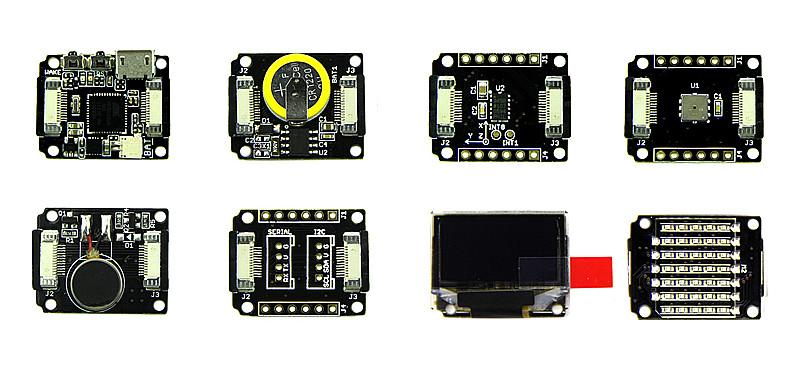
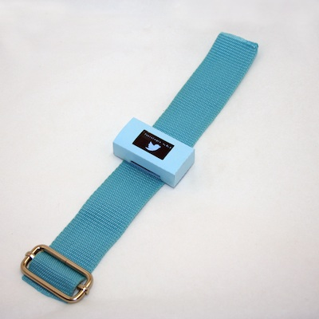
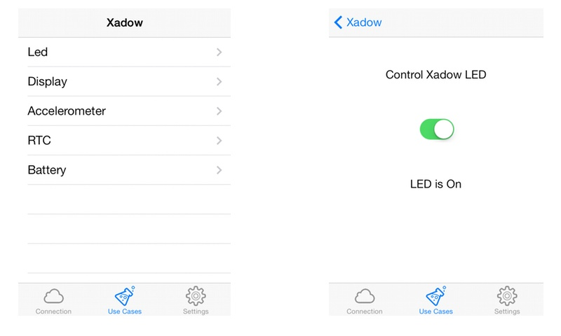
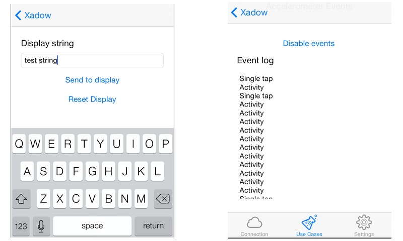
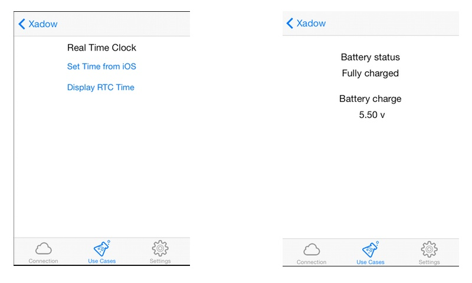

Introducing Xadow
The Xadow platform from SeeedStudio is a great starting point for any wearable project. Since its release I've been very interested in using it because of its form factor (really tiny stuff) and Arduino compatibility.

The Xadow modular design allows to combine several modules with the main Xadow mainboard, including:
- OLED Display
- LED Matrix.
- Accelerometer
- Barometer
- BLE radio
- GPS
- EEPROM memory
- Motor
- NFC
- Groove adapter
- RTC
This makes the platform really flexible, and open to many usage scenarios.
What you can do with it
I developed few prototypes with Xadow, for example a small Twitter-enabled smartwatch, shown in the picture below. In this case the Xadow is controlling the display and communicating with an iOS app which is pulling Tweets from a twitter search or a specific account.

Many other makers are working with Xadow to build interesting wearable applications. For some examples check out http://xadow.cc where my concept is also showcased.
Creating Bluetooth smart apps with Xadow
Xadow is really useful when developing wearable connected accessories such as Smartwatches, jewels and similar objects. These are usually made by combining an Arduino-compatible app, running on the Xadow itself, possibly accessing data from some of the available sensors and interacting with the user with the display, and a smartphone or tablet app.
With the advent of Bluetooth Low Energy, in fact, it is finally possible to develop iOS apps that talk to accessories, without getting a license from Apple. Also on Android, many newer phones and tablets got BLE support too.
When developing such apps, especially when using the Bluetooth Low Energy mode, required for iOS compatibility, you often have to write code which passes commands and data over the Bluetooth link, interprets it and invokes corresponding routines.
Using the BLE communication, there are few issues to be considered: the most important is that the BLE link is quite fragile, and limited to the exchange of very small bits of information, maximum 20 bytes at a time.
For this reason it is difficult to use libraries such as the Arduino-provided Commander, because most of them require to send arbitrary length packets.
The solution is to create a Firmata-like protocol, and add on top of it some buffering in order to be able to manage packages longer than 20 bytes.
Xadow Dashboard
Xadow Dashboard is built out of two main components:
-
Xadow Firmata: an adaptation of the Firmata protocol, using mainly the SYSEX instructions to access data from the specific Xadow modules. In particular this is able to access the Battery, Built-in LED, the OLED display and so on.
-
Xadow Firmata ObjC module: this is a small library that allows communicating with the Firmata running on the Xadow, and can be reused in custom applications.
-
Xadow Dashboard iOS app: this is an example of how an iOS app can interact with Xadow, and is meant to contain several examples for usage scenarios, but could also serve as a basis for a specific applicaton.
The Xadow Firmata provided with the current version of Xadow Dashboard supports just Display, Accelerometer, BLE and RTC but other modules will also be supported as soon as I get access to them.
Screenshots
The following few screens showcase the current implemented functionality:
  
Source code
You can download the Xadow Dashboard project from my github account:
Comments !